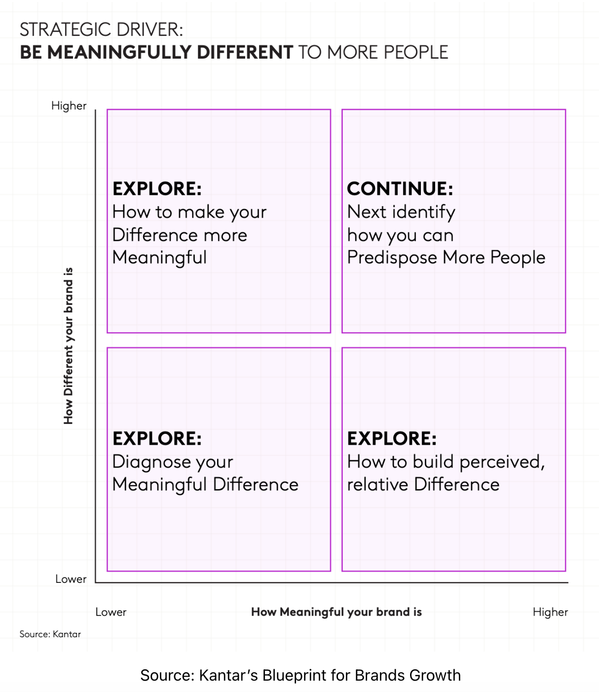
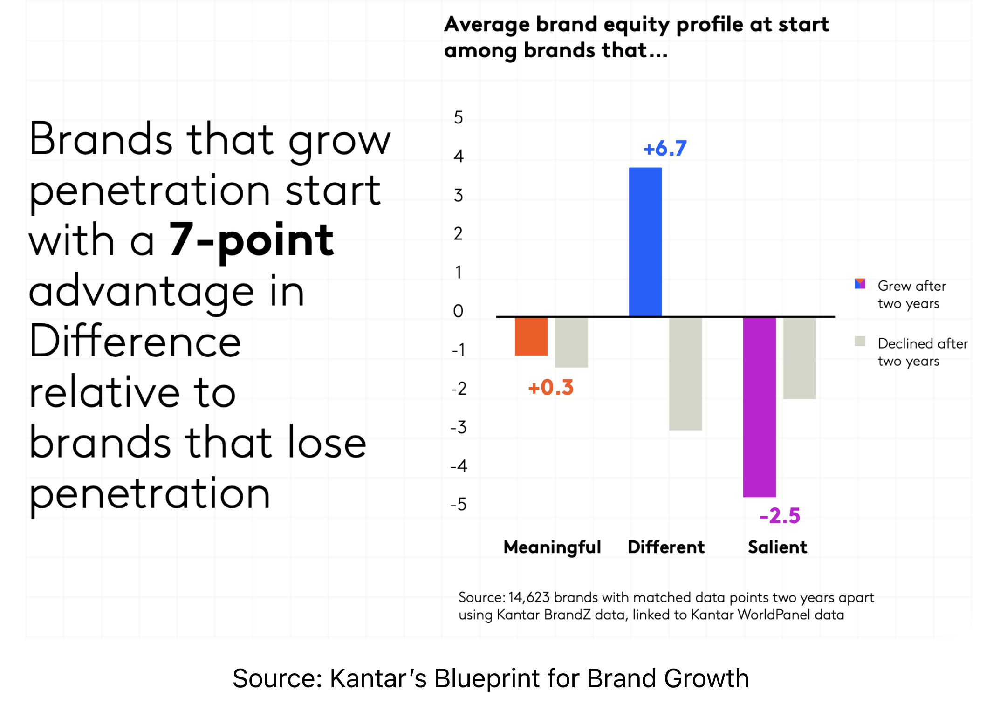
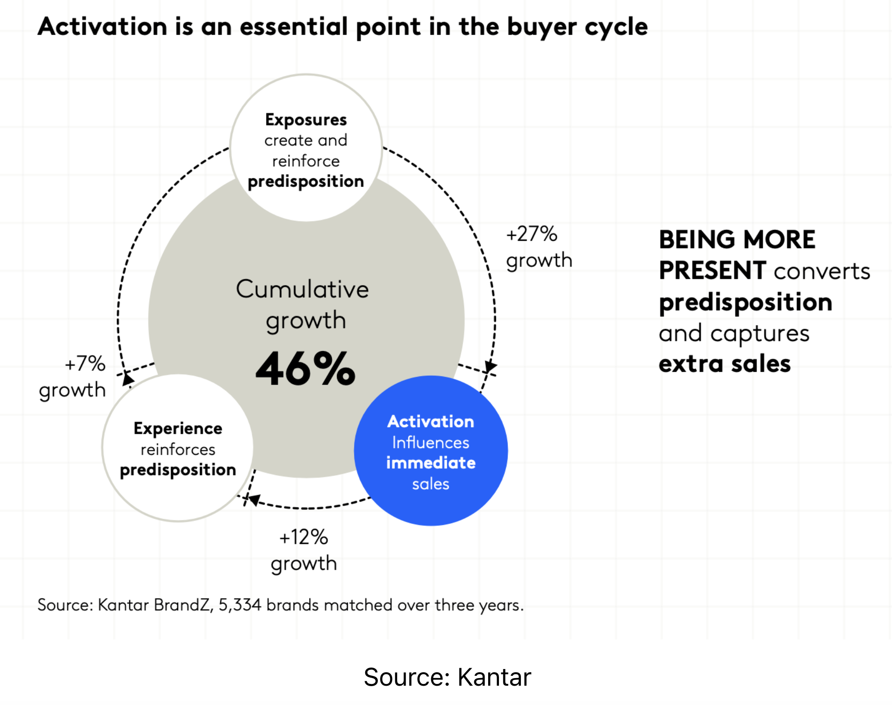

What This Unit Does
Unit 1 used the phrase brand equity at least a dozen times. It treated long-term value as a goal worth defending. It returned repeatedly to the idea that strong brands earn the right to charge more, lose customers more slowly, and convert performance dollars more efficiently than weak ones. None of those claims got a formal definition. They were operating as placeholders for an argument that hadn't been made yet.
This unit makes the argument. The reason it spans three pages and not one is that branding doesn't sit cleanly inside a single chapter. There is a body of theory about what brands are, which is what this page covers. There is a body of practice about how brands get built, named, and changed, which is Unit 2B. And there is a contemporary argument about what's been happening to brand design over the past decade — the trend now widely called blanding — which deserves its own treatment as a standalone essay in Unit 2C.
The Four Ps Tie-In Worth Stating Up Front
A reasonable question before we go further: this is an advertising and IMC course, so why does branding get a whole unit? The four Ps are supposed to work together. Product, price, place, and promotion are interdependent, and treating any one of them as the main event tends to break the whole system. That's all true. But it understates how tight the link between communication and brand actually is.
Here is the operating claim. Memory structures and distinctive assets — the working definition of a brand we are about to install — are not built by the product or the price or the channel. They are built by communication. The way a customer recognizes a brand at the moment of purchase, the way the brand feels emotionally before any rational evaluation begins, the way it sits in cultural conversation between purchases: all of that infrastructure is the output of advertising, public relations, sales promotion, packaging, and personal selling, working together over time. The other three Ps determine whether the brand can deliver on what the communication promised. The communication determines whether the brand exists in the customer's head at all.
So this unit is not a detour from IMC. It is the inside of the engine that Unit 1 described from the outside. We will get formal about what equity actually is, where it comes from, what it pays back, and what should change in your thinking if you are responsible for building any part of it.
What a Brand Actually Is
Ask ten marketing professionals what a brand is and you will get a dozen answers, most of them metaphors. A brand is a promise. A brand is a feeling. A brand is the gut sense your customer has when they encounter your company. A brand is everything you don't say. These answers are not wrong, exactly. They are useless. None of them tells you what to do with a budget. None of them tells you whether a particular marketing dollar is doing anything. None of them survives contact with a CFO.
There is a better answer, and it has been sitting in the marketing-science literature for fifteen years.
1.1 The Mechanical Definition
The cleanest working definition of a brand was articulated by Byron Sharp at the Ehrenberg-Bass Institute and laid out in his 2010 book How Brands Grow: a brand is the set of memory structures and distinctive assets that increase the probability of a buyer choosing it at the moment of category consideration. Brand-building is the work of creating, refreshing, and reinforcing those memory structures over time.
That is not the most poetic definition on the list. It is, however, the only one you can build a budget around, because it specifies what brand activity is supposed to do. It is supposed to install and maintain a particular kind of memory infrastructure in the heads of people who might one day buy from your category. Everything else — the logos, the taglines, the brand archetypes, the emotional resonance — is either a means to that end or a distraction from it.
Three components sit under the definition, and they map cleanly onto things marketers actually do.
Notice what this framework does and doesn't include. It does not include the brand's personality. It does not include the founder's vision. It does not include the design system. Those things matter only to the extent that they cash out in mental availability, distinctive assets, or category entry points. If they don't, they are art projects, not brand work.
1.2 A Parallel Framework Worth Knowing: Kantar's Blueprint
Sharp's framework dominates the academic conversation about brand strategy, but it isn't the only serious framework currently in industry use. Over the past five years, the major competitor — and increasingly the framework that brand consultancies actually deploy at large clients — is Kantar's Blueprint for Brand Growth, published in 2023 as the centerpiece of Kantar's brand-consulting practice. If you read brand strategy decks from McKinsey, Deloitte, or any of the major holding-company agencies in 2026, you are reading some version of the Blueprint.
The Blueprint organizes brand growth around one growth driver and three growth accelerators.
The growth driver is Be Meaningfully Different to More People. The argument is that brands grow when they are perceived as both meaningfully different and meaningfully relevant by a broader audience, and that the work of brand strategy is to find the quadrant of meaningful difference where growth is available. The diagnostic matrix below is the working tool — brands plot themselves on perceived difference and perceived meaningfulness, and the framework prescribes a strategy based on which quadrant they occupy.
The three growth accelerators sit underneath the driver. Predispose more people means building positive mental associations that increase the probability of choice before the buyer enters the category. Be more present means maximizing availability across channels — physical, digital, and in-mind. Find more space means identifying unmet needs, new categories, new occasions, and new geographies where the brand can compete.



The empirical claim worth taking seriously is in the middle chart above. Across 14,623 brands matched across two-year windows in Kantar's BrandZ data, the brands that grew penetration started with an average 7-point advantage in Difference relative to brands that lost penetration. The same brands showed essentially no advantage in being Meaningful (+0.3) and a meaningful disadvantage in being Salient (-2.5 — the brands that were already most salient had grown, then plateaued). In Kantar's reading, Difference is the leading indicator. The brands that grow tomorrow are the brands that look different today.
The third image — the activation circle — completes the framework. Kantar's data, drawn from 5,334 brands matched over three years, shows that brand growth is the cumulative product of three forces: exposures that create predisposition, customer experience that reinforces it, and activation that converts predisposition into immediate sales. None of the three works alone. The +46% cumulative growth figure isn't from any single lever; it's from the interaction of all three. This is the Kantar equivalent of Sharp's mental-plus-physical-availability argument, with one important addition: Kantar gives explicit weight to activation — the moment-of-purchase work that converts upstream brand investment into transaction.
You should notice what this is and isn't. Most of what Kantar says about how to grow a brand is not very different from what we said in the Sharp section. Both frameworks point to penetration as the primary growth lever. Both insist on mental availability or its functional equivalent. Both believe in distinctive assets and broad reach. The genuine disagreement is about one word: differentiation.
Sharp says distinctiveness, not differentiation, is what matters. His argument is that within a given category, most brands are functionally similar — orange juices are orange juices, banks are banks, accountants are accountants — and the brand work that pays is building visual and verbal codes that allow recognition rather than perceived difference. Trying to be "meaningfully different" is, in Sharp's view, the trap that produces over-positioned, narrowly-targeted brands that fail to grow.
Kantar says meaningful difference is the entire game. Their data, on their reading, shows that brands which grow are perceived as different in ways that matter to buyers. Distinctiveness without difference produces a brand that's recognized but not preferred. The Blueprint explicitly puts Difference at the top of the growth hierarchy.
The argumentative point worth installing — and this is the actual teaching idea — is that both frameworks can be right, depending on the category. Sharp is more right than wrong in fast-moving consumer goods, banking, basic services, utilities, and most B2B categories — places where most brands are genuinely similar and the customer is satisfying a need rather than expressing an identity. The toilet paper buyer doesn't want their brand to be "meaningfully different from generic." They want it to be soft and recognizable, with a wrapper they can find on the shelf. Distinctiveness wins.
Kantar is more right than wrong in premium categories, considered purchases, and identity-expressive products — skincare, luxury, automotive, technology, fashion, hospitality, and almost everything with a price premium above 30% over the generic alternative. The skincare buyer needs to believe their brand is meaningfully different from the generic. Without that belief, the price premium collapses. Meaningful difference wins.
This is also why the framework debate matters to your work as a student of advertising and IMC. The IMC system that builds the brand has to be calibrated to which framework describes the category. A category where Sharp is more right requires advertising that maximizes reach, repetition, and distinctive-asset reinforcement — the work is mental availability. A category where Kantar is more right requires advertising that articulates and reinforces meaningful difference — the work is positioning. The strategies aren't interchangeable, and using the wrong one is how brand budgets get wasted on the right framework applied to the wrong category.
1.3 The Textbook Definition, Briefly
The American Marketing Association's definition — the one that shows up in every introductory text — calls a brand "a name, term, sign, symbol, design, or a combination of them intended to identify the goods or services of one seller or group of sellers and to differentiate them from those of competition." This is legally correct and operationally circular. It tells a trademark lawyer what to file. It tells a marketing manager nothing about whether their work is succeeding.
The AMA definition is also the source of the broader concept of trade dress, which is the appearance and image of the product — packaging, color, shape, sounds, lettering — distinct from the brand name and logo. Trade dress matters because it is legally protectable, and the law's recognition of trade dress is essentially an acknowledgment that distinctive brand assets, in Sharp's terms, are real economic property. The MGM lion's roar is trade dress. The Coca-Cola red is trade dress. The Twitter blue bird, when it existed, was trade dress. We will come back to the legal side briefly in Part B and more thoroughly in Unit 8.
1.4 Where the Brand Sits in the Four Ps
Brand is not the fifth P. It is something that lives inside the first P, Product, but pervades all the others. The simplest way to see it:
This is worth pausing on. The first P, Product, contains decisions about the actual product (features, quality, packaging), the product line (whether to stretch BMW into a compact economy car or stretch Crayola into laptops), and the brand itself. Brand is one decision among several inside Product. But the brand is the decision that determines which other product decisions are possible. A BMW can stretch into the X1 because the brand can hold "small German performance crossover." It cannot stretch into a $14,000 economy compact because the brand cannot hold "cheap." Crayola can stretch into markers and modeling clay because the brand can hold "things kids make stuff with." It cannot stretch into laptops because the brand cannot hold "consumer electronics."
The same goes for the other three Ps. The price position — premium, competitive, discount — is enabled by the brand. The channel — luxury department store versus mass merchandiser — is enabled by the brand. And the promotion, which is the focus of this entire course, is the engine that builds the brand that enables the rest. The four Ps are interdependent, but the brand is the connector that makes the interdependence work in a particular direction. Without it, you have a commodity with four levers.
1.5 Brand Identity vs. Brand Image
One more distinction before we get to the killer evidence. Two terms get used interchangeably in casual conversation and shouldn't be.
Brand identity is what the company sends out. The logo, the colors, the tagline, the brand guidelines, the official voice — all the assets the brand team controls and ships into the world. Brand identity is the brand's broadcast signal.
Brand image is what the customer receives. The set of associations, feelings, and memories that actually sit in the customer's head when they think about the brand. Brand image is what the broadcast signal sounded like by the time it arrived, which is not always what was sent.
The gap between identity and image is where most branding work succeeds or fails. A brand team can produce immaculate guidelines, ship perfectly consistent assets, and still arrive in the customer's head as something they didn't intend. Conversely, a brand can ship work that looks chaotic from the inside and still cohere in customer memory because the consistent thing wasn't the visual treatment, it was the underlying meaning. This is exactly the band-not-parrot argument from Unit 1, viewed from the brand side instead of the IMC side.
1.6 The McDonald's Carrot Study
If you want one piece of evidence that brand image is a real phenomenon — measurable, repeatable, large in magnitude — the cleanest demonstration in the research record is a 2007 study run on a sample of 63 preschool children from low-income families in California, published in Archives of Pediatrics and Adolescent Medicine.
The design was simple. Each child tasted five food items — a hamburger, chicken nuggets, French fries, milk or apple juice, and a baby carrot — twice each. One version of each item came wrapped in McDonald's packaging. The other version, identical food, came in plain white packaging with no branding. The children were then asked which one tasted better.
The result that matters most is the bottom row. Children preferred the carrot they ate from a McDonald's wrapper over the identical carrot in a plain wrapper by more than two to one. McDonald's does not sell carrots. The brand image had nothing to attach itself to in product memory. The wrapper carried the entire effect. A two-to-one preference shift, on a vegetable the brand does not market, driven by nothing except graphic design.
This is what brand image looks like when you isolate it from everything else. It is not a metaphor. It is a measurable distortion of perception, large enough that preschoolers eating a literal carrot reported tasting something different depending on which paper it came in. Every other piece of branding theory in this unit is, at some level, an attempt to explain how that distortion gets installed and what it pays back.
- A brand is the set of memory structures and distinctive assets that surface at the moment of category consideration. Everything else is either a means to that or a distraction from it.
- The three operative components are mental availability, distinctive brand assets, and category entry points. Brand work is judged by whether it builds any of the three.
- Brand lives inside the first P, Product, but it is the decision that determines what the other three Ps are allowed to do. Premium pricing, luxury distribution, and emotional advertising are all licensed by the brand or unavailable without it.
- Brand identity is what the company sends. Brand image is what the customer receives. The two are not the same, and the gap between them is where most branding work succeeds or fails.
- The McDonald's carrot study is the closest thing the research record has to a clean demonstration that brand image is real, large, and measurable.
Brand Equity, Two Ways of Looking At It
Once you have a working definition of what a brand is, the next question is whether the brand is worth anything. Brand equity is the term marketers use for the answer. The standard definition — the goodwill an established brand has accumulated over time — is doing a lot of work in a short phrase, and there are two distinct ways of measuring whether the goodwill is real. One looks at what the brand does for the company. The other looks at what the brand does inside the customer's head. Both are valid. Both miss something the other captures.
2.1 The Firm-Based View
The firm-based view of brand equity is the financial one. A brand has equity to the degree it produces measurable economic outcomes the company would not otherwise enjoy. Four outcomes show up consistently in the literature: higher market share, stickier customer loyalty, pricing power, and what's called a revenue premium — the extra revenue per unit a branded product earns over an otherwise identical unbranded one.
The revenue premium has a tidy formula. For brand b against a comparable private-label product pl, revenue premium equals (volume of b times price of b) minus (volume of pl times price of pl). The branded item can carry a premium because customers will pay more for it, or sell more units because customers prefer it, or both. The size of the premium is roughly the price of the goodwill the brand has accumulated.
The most aggressive demonstrations of this effect come from commodity categories where the underlying product is functionally identical across brands. Tylenol and generic acetaminophen are chemically the same compound at the same dose. Tylenol typically commands a two-to-three-times price premium over the store-brand version. The molecule is identical. The brand image is not. Consumers pay the premium because the Tylenol wrapper, like the McDonald's wrapper in the carrot study, carries a particular set of associations — reliability, safety, parental approval — that the generic wrapper does not.
There is a useful version of this argument that you can run on a napkin. The standard rule of thumb for valuing a small business when it sells — restaurant, retail, services — puts the sale price at roughly 0.2 to 0.5 times annual gross revenue. The standard rule of thumb for valuing a business with a defensible brand puts the sale price at 1.5 times annual revenue or higher, and sometimes substantially higher. The gap is the brand. A small business owner selling their company can capture, at the high end, half a year's revenue. The same operation with a real brand attached can capture eighteen months or more. Conservatively, the strong-brand version of a business is worth three to five times what the unbranded equivalent is worth, even when the underlying operations are nearly identical. This is the only piece of branding theory that consistently survives contact with a business broker.
Macro evidence is equally consistent. The Kantar BrandZ Top 100 portfolio, which tracks the world's most valuable brands, has historically outperformed the S&P 500 by roughly three times over multi-decade windows. The Interbrand Top 100 list, which uses a different methodology, shows a similar pattern. The brands at the top tend to stay at the top. Apple, Google, Coca-Cola, Microsoft, and a handful of others have anchored these rankings for fifteen-plus years. The list is more a description of incumbency than a prescription for growth.
This is worth saying explicitly because the lists get cited as if they were maps for new entrants. They are not. They are demonstrations that brand equity, once accumulated, defends itself against the kind of competitive pressure that would otherwise erode it. The implication for an entrant is not "do what these companies did." It is "the position these companies occupy is exceptionally difficult to dislodge, so plan accordingly."
2.2 The Customer-Based View
The firm-based view tells you whether the brand is paying back. It does not tell you why. For that, you need the customer-based view, which is the model the academic literature, particularly the work of Kevin Lane Keller at Dartmouth, has spent thirty years refining.
In Keller's framing, brand equity is built out of brand knowledge, which decomposes into two layers. The first is brand awareness, which is about whether the brand exists in the customer's memory at all. The second is brand image, which is about what is attached to the brand in the customer's memory when it is recalled.
Awareness comes in stages. The lowest is recognition: if you put the brand in front of the customer, they know they have seen it before. Above that is recall: the customer can produce the brand name on their own, prompted only by the category. Above that is top-of-mind awareness, often shortened to TOMA: the brand is the first one the customer names when the category comes up. Top-of-mind status is the goal because it is the version of awareness most likely to translate into actual purchase consideration.
Brand image, in Keller's model, is composed of associations — the particular thoughts, feelings, attributes, and benefits the customer links to the brand. These associations can be evaluated on four dimensions:
- Type: are the associations about product attributes (Volvo = safety features), about benefits (Volvo = my family is protected), or about overall attitude (I trust Volvo)?
- Favorability: are the associations positive, negative, or neutral?
- Strength: how firmly are the associations attached to the brand in memory?
- Uniqueness: are the associations specific to this brand, or do competitors share them?
Keller's framework is, broadly, the customer-side counterpart to Sharp's framework. They emphasize different things — Sharp is more interested in availability and salience, Keller is more interested in the structure of associations — but they are pointed at the same underlying question, which is what does the brand mean in the customer's head and how do you measure whether the meaning is paying back.
2.3 A Note on Diagnostic Frameworks
Beyond Keller, the brand equity literature has produced several proprietary frameworks that get used in industry. The two most prominent historically are Young & Rubicam's BrandAsset Valuator, which scores brands on Differentiation, Relevance, Esteem, and Knowledge — abbreviated DREK — and plots them on a four-quadrant Power Grid showing brand lifecycle stage. The other is David Aaker's Big Five brand personality dimensions: sincerity, excitement, competence, sophistication, and ruggedness. Both have been heavily used by consulting firms over the past three decades, though Kantar's Blueprint for Brand Growth, which we covered in Section 1, has largely supplanted the BAV in industry use over the past five years. Aaker's Big Five is still widely cited, but more as a teaching framework than as an operating one.
All three frameworks have the same failure mode worth flagging.
Treat all three frameworks the way a doctor treats a thermometer. They tell you something about the current state. They are not the treatment plan.
- The firm-based view of equity measures what the brand pays back — market share, loyalty, pricing power, and the revenue premium over comparable unbranded alternatives.
- A useful rule of thumb: businesses without strong brands sell for 0.2–0.5× annual revenue; strong-brand businesses sell for 1.5× annual revenue or more. The gap is the brand. Investors price exactly that difference, which is what the Shark Tank sharks mean by "you have a product, not a brand."
- The customer-based view, formalized in Keller's brand knowledge model, measures what is sitting in the customer's head — awareness (recognition, recall, top-of-mind) and image (associations evaluated on type, favorability, strength, and uniqueness).
- Both views are valid. The first tells you whether the brand is working. The second tells you why.
- Diagnostic frameworks like the BAV's DREK and Aaker's Big Five are useful for describing a brand's current state. They become destructive when used as targets, because optimizing-against-a-framework produces brands that look like every other brand optimizing against the same framework.
The Economic Case for Brand Investment
The argument so far has been mostly conceptual. Brands are memory structures. Equity is what those structures pay back. The customer-based and firm-based views describe the same thing from different sides. Fine. The harder question, and the one that decides actual budgets, is whether the payback is large enough to justify the spend. A CFO who has read this far is allowed to ask how much, and the honest answer requires some numbers.
The numbers got dramatically clearer between 2021 and 2026, partly because the performance-marketing-only experiment finally broke at scale, and partly because the rise of AI-mediated search created a measurable advantage for brand-strong companies that did not exist five years ago.
3.1 The CAC Inflation Argument
Customer acquisition cost — CAC — is the headline number for any company that buys customers through paid channels. Performance marketing's core claim, throughout the 2010s, was that CAC could be measured precisely, optimized continuously, and held stable through skill. That claim has not aged well.
The data: direct-to-consumer e-commerce CAC climbed roughly 25 to 40 percent between 2021 and 2025, with some category benchmarks showing increases of 222 percent over the eight-year window from 2017 to 2025. Google Ads cost-per-click rose 12.88 percent year over year. Meta CPMs jumped 15 to 40 percent following the platform's March 2026 attribution update, depending on vertical. The DTC operators who had built businesses on a 1.5-to-2.0 ROAS performance model found their ROAS degrading toward 1.0 — the breakeven line below which the model is not viable.
The mechanism is straightforward once you stop assuming CAC is a constant. Performance marketing reaches customers who are already deciding. The pool of customers actively deciding at any given moment is finite. As more advertisers chase the same finite pool through the same auction-based platforms, the price per customer goes up. There is no skill move that defeats this. The only way to lower CAC durably is to reduce the share of your customers who have to be acquired through paid auctions, which means building enough brand recognition that some non-trivial fraction of customers show up pre-sold.
This is the empirical core of the case for brand investment. It is not a vibes argument. The brands that invested in awareness through 2017–2024 came out of the period paying meaningfully less per customer than the brands that didn't. The brands that doubled down on performance came out paying triple. Brand investment is the only known way to escape the CAC inflation trap, because every other lever — better creative, better targeting, better landing pages — works inside the auction rather than around it.
3.2 The 95-5 Rule
The reason brand investment lowers CAC over time has a second, complementary explanation that comes out of B2B research at the LinkedIn B2B Institute. Professor John Dawes at the Ehrenberg-Bass Institute calculated that at any given moment, only about 5 percent of B2B buyers in a category are actually in-market — actively evaluating vendors, ready to purchase. The other 95 percent are out-of-market and will not buy for months or years.
The 95-5 framing reframes the brand-versus-performance argument in a way that turns out to apply well beyond B2B. Performance marketing is, by design, a tool for reaching the 5 percent. It targets buyers showing in-category intent signals — search queries, retargeting cookies, comparison-shopping behavior. It does not, by design, reach the 95 percent, who emit no such signals because they are not shopping.
The job of brand marketing is to plant the brand in the 95 percent's memory before they enter the market. When they eventually transition into the 5 percent — when their software contract comes up for renewal, when their car lease expires, when their next infrastructure decision becomes urgent — the brand is already in their consideration set. Mental availability is the entire mechanism. The brand that was in memory three months before the buying decision started gets to compete for the purchase. The brand that wasn't, doesn't.
A pure-performance allocation, then, is structurally aimed at the 5 percent and assumes the 95 percent will fill itself somehow. Sometimes it does — competitors are also planting memory structures, and lazy buyers default to known brands — but the company that abandons brand investment is essentially relying on its competitors' brand investment to keep filling its eventual customer pool. This works until it doesn't, which is roughly the story of every DTC brand that scaled fast on Facebook in 2018, ran out of pool in 2023, and either consolidated, sold cheap, or shut down.
3.3 The AI Overviews Wrinkle
One development that did not exist when most of the brand-equity literature was written: AI-mediated search. When a buyer asks ChatGPT, Claude, Gemini, or Perplexity for vendor recommendations — solar installers, CRM platforms, accountants near them — the model surfaces brands that it can cite with editorial authority. Citation depends on entity strength, knowledge graph presence, third-party coverage, and reputational signals. None of that is bought directly by performance marketing. All of it accrues, slowly, from brand investment upstream.
The early data is sharp. Seer Interactive analyzed 3,100 queries between June 2024 and September 2025 and found that AI Overviews compressed organic click-through rates by 61 percent and paid click-through rates by 68 percent overall. The traffic from AI-mediated search collapsed for almost everyone. But brands cited within AI Overviews saw 35 percent higher organic CTR and 91 percent higher paid CTR than uncited brands on the same queries.
The implication is that AI search has produced the first genuinely new economic argument for brand investment in a generation. Mental availability used to be a long-term play whose return showed up in branded search volume, direct traffic, and the kind of softer customer-acquisition outcomes that take quarters or years to demonstrate. In 2026, mental availability also shows up in which brands get cited by language models, which determines who appears in the AI-mediated buyer journey at all. Brands that are well-known and well-covered get cited. Brands that aren't, don't. The traffic gap between cited and uncited brands is enormous and growing.
Performance marketing does not buy AI citation. Brand marketing does, indirectly, by producing the press coverage, third-party reviews, podcast mentions, analyst attention, and category authority that language models retrieve as sources. The brands that won the AI Overviews game in 2025 and 2026 are the brands that had already done the brand-building work before the technology existed.
3.4 Why Even Rational Buyers Respond to Brand Work
A reasonable objection to the argument so far: maybe brand effects are real for impulse purchases — chips, soda, fast food, fashion — but evaporate when buyers actually think about what they're doing. Engineers buying servers, CFOs buying SaaS, procurement officers buying industrial machinery: presumably these buyers run rational evaluations that defeat any cognitive shortcut a brand image might exploit.
The cognitive science says otherwise, and has said so for two decades. Daniel Kahneman's distinction between System 1 — fast, automatic, associative — and System 2 — slow, deliberate, analytical — captures the basic mechanism. Purchase decisions, even high-stakes B2B ones, get made by System 1 in milliseconds and then rationalized by System 2 in the minutes or hours that follow. The rationalization feels like the decision. It isn't. The actual decision was already made when the consideration set was assembled, and the consideration set was assembled out of whichever brands had mental availability when the question came up.
The procurement officer comparing CRM vendors did not include Salesforce, HubSpot, and Microsoft in the evaluation matrix by accident. Those three are in every CRM evaluation matrix because they are the three brands whose mental availability is high enough to make the cut. The hundreds of smaller CRMs that might be better technical fits do not get evaluated because they did not surface in System 1 when the procurement officer sat down to write the shortlist. The deliberate System 2 evaluation that produced the final choice was a comparison among brands that won the System 1 round first.
This is also why Unit 1's "I don't like advertising" digression matters. Customers, especially professional buyers, sincerely believe their decisions are driven by rational evaluation of features and price. They are wrong, in measurable ways. The behavioral data has shown the gap for sixty years. Brand investment targets the part of the decision that the customer doesn't notice happening, which is also the part that determines what gets to be evaluated at all.
Brand investment lowers customer acquisition cost over time, because branded demand fills the funnel without competing in paid auctions. It seeds memory structures in the 95 percent of buyers who are out-of-market today and will be in-market eventually. It earns citation in AI-mediated search, which has become a meaningful traffic source in its own right. And it targets the System 1 layer of decision-making that determines what gets evaluated, even by buyers who believe they are deciding rationally. None of this shows up cleanly on a last-click attribution dashboard, which is exactly the measurement problem the next twenty years of marketing will spend trying to solve.
- DTC CAC rose roughly 25–40% from 2021 to 2025, with some categories showing 222% over an 8-year window. Performance-only allocations have hit a structural ceiling that better creative cannot fix.
- The 95-5 rule: about 5% of category buyers are in-market at any given time. Performance marketing reaches that 5%. Brand marketing seeds the other 95%. Cutting brand to fund performance is fishing only in the pond of people already deciding, while the lake refills slowly with someone else's customers.
- AI-mediated search has produced a new economic argument for brand. Cited brands see 35% higher organic CTR and 91% higher paid CTR than uncited brands. Citation depends on brand authority — an outcome of upstream brand investment, not performance budget.
- Even rational buyers respond to brand work, because purchase decisions get made by System 1 (fast, associative memory) and rationalized by System 2 (slow analysis) after the fact. The consideration set is assembled before the evaluation begins, and brand investment is what determines what's in the consideration set.
Six Books Worth Reading
Most of contemporary marketing discourse happens in fifteen-second LinkedIn videos and screenshot quote-graphics, which is fine for what it is and useless for actually learning the field. Books still matter, because books are where arguments get made carefully enough to be tested and refined. If you take only one thing from this unit beyond the working definitions, take this short list. Two of these are enough to outpace the average MBA on branding fluency. All six and you are reading the conversation, not following it.
If you only read one, read Sharp. How Brands Grow is the book that, more than any other in the past twenty years, restructured how serious marketers think about the field. It is short, empirical, and frequently rude about ideas that were comfortable before he wrote it.
If you read two, add Ries and Trout. Positioning is older — 1981 — and shows its age in places, but the core argument that positioning happens in the customer's mind rather than the company's strategy deck is still the cleanest summary of what brand work is for.
Reading all six is enough to be useful in a brand strategy meeting. Reading none of them is more common than the profession likes to admit.
- The serious brand-strategy literature is much shorter than people think. Six books cover most of what's worth knowing.
- If you read only one, read Sharp — the book that restructured the field most recently.
- If you read two, add Ries and Trout — the cleanest summary of what positioning is actually doing.
What This Means for a Small, Local, or Regional Brand
The brand-equity literature was largely written by people consulting for the Fortune 500. The case studies are Apple, Coca-Cola, McDonald's, BMW. The frameworks were tested against companies with seven-figure brand-tracking budgets and the kind of media reach that makes mental availability a question of how much rather than whether. If you are running a regional HVAC company, a small B2B SaaS firm, a local restaurant group, or a single-location specialty retailer, you have probably noticed that most of the textbook treatment of this material does not actually apply to you.
The honest version of the small-brand closer is that this is half-true, in interesting ways. Some of the frameworks scale down well. Others were never going to. Knowing which is which saves you from spending budget on the ones that don't.
- Sharp's three pillars. Mental availability matters more, not less, at small scale, because the catchment is small enough that you can actually achieve it. Distinctive brand assets are within reach — pick three and defend them. Category entry points are mostly geographic at small scale, which makes them easier to identify.
- Brand identity vs. brand image. The gap between what you send and what customers receive is the same gap whether you have 50 customers or 50 million. If you cannot articulate what your brand image actually is in your customers' words, you are running on guesswork.
- The McDonald's-carrot insight. Wrappers matter. Signage, vehicle wraps, uniforms, packaging, and the consistency of all of them across customer touch points carry brand image work for small brands the way television does for big ones.
- The CAC-lowering logic. Branded search, direct traffic, and word-of-mouth referrals are exactly the channels small brands can win on. Every dollar of brand investment that produces an unprompted recommendation saves you from competing in paid auctions you cannot afford anyway.
- System 1 / emotional response. A local brand with a clear, consistent emotional posture beats a faceless competitor every time, because the decision is made on familiarity and feeling before any rational comparison begins.
- Aaker's Big Five personality dimensions. You do not have the budget to telegraph "sophistication" versus "ruggedness" through a paid media campaign. Pick a personality that fits your category, ship it consistently, and stop overthinking it.
- Country-of-origin leverage. Unless you are explicitly trading on it (a German tool brand, an Italian food import) this is largely a Fortune 500 lever.
- The BAV Power Grid lifecycle optimization. Power Grid analysis costs more than your annual marketing budget. The frameworks were not built for your scale, and chasing them is wasted motion.
- Most luxury-brand thinking. Scarcity-as-strategy, paid-media silence, the celebrity endorser game — these are mechanics for brands with the aura to defend. Adopting them prematurely makes a small brand look like it is performing rather than operating.
- Multi-million-dollar brand campaigns. The relevant comparison for a small brand is not "what is Nike doing." It is "what is the best operator in my zip code, my vertical, or my product category doing differently from me." Closer benchmarks. Smaller bets. Faster feedback.
5.1 What to Actually Do
If you have read this far and you run a small brand, the working playbook is shorter than the textbook suggests.
Pick a small number of distinctive brand assets — three at most — and use them obsessively. A specific color, a specific typeface, a recurring visual or verbal hook, a consistent voice in customer-facing copy. The asset choice matters less than the consistency. The Geico gecko was an okay creative choice in 2000; what made it equity was twenty-five years of refusing to retire it.
Defend those assets across every touch point. Vehicle wraps, business cards, invoice templates, signage, social profiles, packaging, the way the phone gets answered. The customer who encounters your brand seven times across three months should be encountering the same brand each time, even if the executions are different. This is the band-not-parrot principle from Unit 1, scaled to the resources a small brand actually has.
Accept that brand-building at small scale is slow. The good news is that it is also cheap. A regional brand that ships consistently for three years builds equity that a regional competitor running shotgun ads cannot match, and the equity compounds. Brand investment at small scale is closer to compound interest than to advertising as the textbooks describe it — small, regular contributions over a long enough window to let the effect accumulate.
Use the Sharp framework, not the Keller-and-Aaker framework. Keller and Aaker were built to describe and diagnose mature brands with established image structures. Sharp was built to explain how brands actually grow, and his findings are more applicable at small scale than the older theory ever was.
Target broadly within your catchment. This is the small-brand version of Sharp's "target all category buyers, not invented segments" principle, and it sometimes confuses students because we said earlier that small brands operate in small markets. Both are true. Pick a small market — a region, a vertical, a product category — and then within that market, reach everyone who buys the category. A regional HVAC company shouldn't microtarget "homeowners 45–55 with mid-century homes who have searched for furnace replacement in the past 90 days." It should be the one HVAC name everyone in the region recognizes when something breaks. Sharp's broad-reach principle and Kantar's meaningful-difference principle both apply, but Sharp applies more, because most small-brand categories — HVAC, plumbing, accounting, regional banks, family restaurants, local breweries — are exactly the kind of similar-product categories where distinctiveness outperforms differentiation. If you run a small premium brand in a category where meaningful difference matters (a high-end skincare line, a craft distillery, a boutique design firm), then Kantar starts to weigh more. The judgment is which framework better describes your category, and the answer is usually obvious once you ask the question.
And read a book. If you read Sharp's How Brands Grow and apply its working logic — be easy to recall, be easy to recognize, be easy to find — you are operating on a sounder framework than most marketing departments at companies a hundred times your size.
- About half of the textbook brand-equity literature applies to small brands. The half that does — Sharp's three pillars, the identity-image distinction, the System 1 layer, the CAC-lowering logic — is more useful at small scale than at large.
- The half that doesn't — Aaker's Big Five, country-of-origin leverage, BAV optimization, luxury-brand mechanics — was built for budgets a small brand does not have and contexts a small brand does not occupy.
- The working playbook: pick three distinctive assets and use them obsessively, defend them across every touch point, accept that the equity compounds slowly, and use the Sharp framework rather than the older Keller-and-Aaker frameworks.
- Brand investment at small scale is closer to compound interest than to advertising. Small regular contributions over a long enough window outperform short bursts of expensive activity.
More Views
For students who want to go deeper on the foundations covered in this part. Articles, primary research, and a video, leaning toward writers who are arguing for something specific. None of these are textbook treatments. Reading them will sharpen your own thinking even when — sometimes especially when — you disagree.
The clearest side-by-side comparison of the two dominant frameworks in contemporary brand strategy, including the differentiation-versus-distinctiveness debate and how each framework applies differently to small vs. large companies. This is the load-bearing article for the Sharp/Kantar discussion in Section 1.
The cleanest five-point summary of Sharp's follow-up book, including the practical operationalization through category entry points, the distinctive assets grid, and the three components of physical availability (presence, prominence, relevance). If you don't have time to read the book, read this.
A practitioner's reading of Sharp's core argument with worked-through implications for marketing decisions. Useful as a third pass through the same material — when you've read the framework debate and the speed summary, this is where the ideas land in practice.
Sharp explaining his own framework in his own voice. Multiple short talks are available; the Ehrenberg-Bass Institute YouTube channel hosts several of them. Useful if reading is not your preferred format. Sharp is unusually direct for an academic, which means his talks land the argument faster than the book does.
The most comprehensive 2026 treatment of the brand-versus-performance debate, with current CAC inflation data, the AI Overviews citation argument, the 95-5 rule explained, and a 90-day reallocation playbook. The deep version of the economic case sketched in Section 3.
The primary source for the 95-5 framework we cited in Section 3. Short, data-rich, and free. Read this if you want the math behind the claim that performance marketing reaches the 5% of buyers in-market today while brand marketing seeds the 95% who will be in-market over the next 24 to 60 months.
The highest-quality opinionated writing on brand strategy currently published. Ritson is professionally rude about brand fads, defends Sharp's framework regularly, and writes with the directness that academic marketing prose almost never achieves. Paywall, but reasonably priced — and the back catalog alone is worth the subscription.
Glossary
Curated terms used in this part of the unit. Definitions are one sentence, intended for review rather than substitution for the section that introduced the term.
- Brand
- The set of memory structures and distinctive assets that increase the probability of a buyer choosing it at the moment of category consideration (Sharp / Ehrenberg-Bass).
- Brand equity
- The accumulated goodwill an established brand has earned over time, measurable in two ways — what it pays back to the firm, and what it occupies in the customer's mind.
- Brand identity
- What the company sends out — logo, voice, story, guidelines — as the brand's broadcast signal.
- Brand image
- What the customer receives — the set of associations, feelings, and memories actually attached to the brand in customer memory.
- Mental availability
- The probability that the brand surfaces in a customer's memory at the moment they enter the category, the first of Sharp's three pillars of brand equity.
- Distinctive brand assets
- The visual, verbal, and sensory codes (logos, colors, sounds, characters) that allow buyers to identify the brand instantly across channels.
- Category entry points
- The situations, occasions, and need-states that trigger category consideration in the first place.
- Awareness stages
- The hierarchy of recognition (knows when shown), recall (produces unprompted), and top-of-mind (names first), which together describe how present a brand is in customer memory.
- Brand knowledge (Keller's CBBE)
- The customer-based equity model, decomposing brand into two layers — awareness and image — with image evaluated on type, favorability, strength, and uniqueness of associations.
- Revenue premium
- The extra revenue per unit that a branded product earns over an otherwise identical unbranded one, used as a financial proxy for brand equity.
- Customer-based brand equity
- The view of equity that measures what is sitting in the customer's head — Keller's model of awareness plus image associations.
- Firm-based brand equity
- The view of equity that measures what the brand pays back — market share, customer loyalty, pricing power, and the revenue premium.
- BrandAsset Valuator (BAV)
- Young & Rubicam's proprietary brand-strength diagnostic, scoring brands on Differentiation, Relevance, Esteem, and Knowledge, plotted on a four-quadrant Power Grid.
- Aaker's Big Five
- David Aaker's five brand personality dimensions — sincerity, excitement, competence, sophistication, ruggedness — used for diagnostic description rather than as goals.
- 95-5 rule
- Professor John Dawes's calculation that at any given moment about 5% of category buyers are in-market and 95% are out-of-market, used to justify brand-building investment beyond the immediately-shopping audience.
- Customer acquisition cost (CAC)
- The total cost to acquire one new customer through paid channels, which has inflated 25–40% across DTC e-commerce between 2021 and 2025 as performance marketing has saturated.
- Customer lifetime value (LTV)
- The total revenue a customer is expected to generate across their relationship with the brand, raised by brand investment that improves retention and repeat purchase.
- System 1 / System 2
- Daniel Kahneman's distinction between fast, automatic, associative thought (System 1) and slow, deliberate, analytical thought (System 2); brand work targets System 1 because that is where consideration sets are assembled before evaluation begins.
- AI Overviews
- The AI-generated summaries that increasingly appear at the top of search results, compressing organic click-through by ~61% overall while delivering +35% organic CTR to brands cited within them.